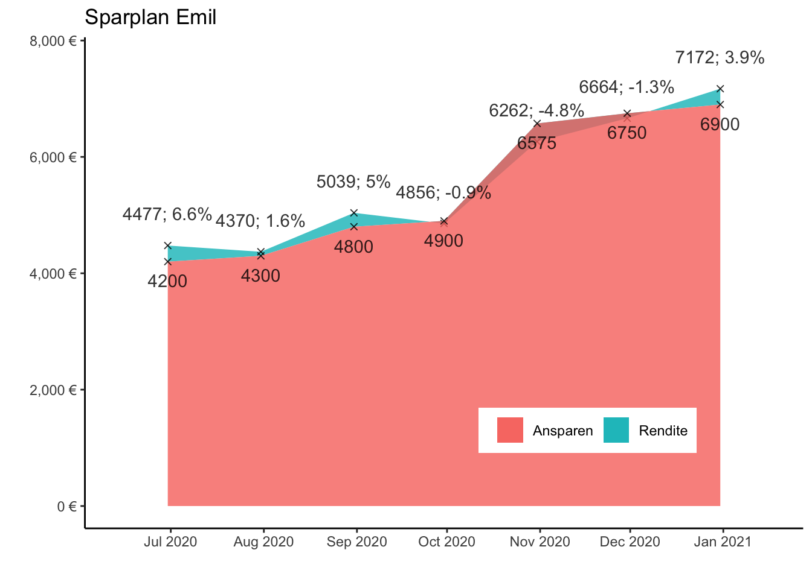
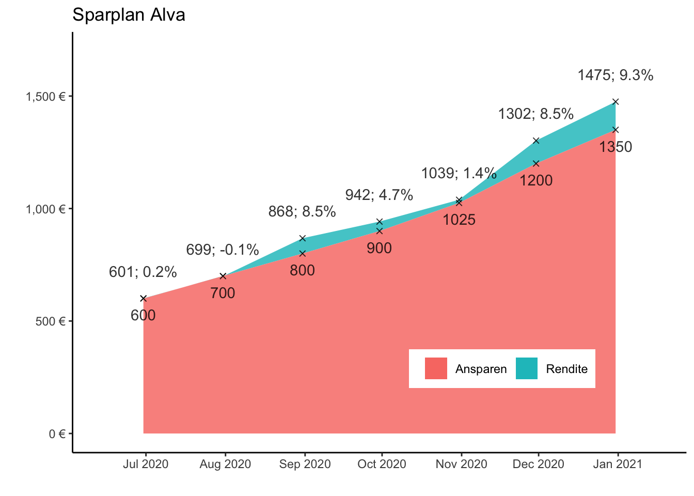

Die Einzahlungen von Emils Opas auf das Depotkonto werden seit April 2020 jeweils zum 20. des Monats in einen ETF auf den Nasdaq-100 angelegt. Zurzeit wird der thesaurierende Nasdaq-ETF von Amundi bespart, da für diesen über den Broker maxblue bis September 2021 kein Ausgabeaufschlag erhoben wird.
Der Nasdaq 100 hat sich in der zweiten Hälfte 2020 besser als der Gesamtmarkt entwickelt (16,3% Amundi Nasdaq 100 zu 12,6% Amundi MSCI World), wobei ein starker Euro die Rendite der ETFs mit hohem USD-Anteil gedrückt hat.
Die Gelder von den Sparbüchern der Sparkasse und der Volksbank wurden im August und September in Amazon- und Apple-Aktien angelegt. Diese Aktien verzeichnen seitdem eine Seitwärtsbewegung, was sich negativ auf die Rendite ausgewirkt hat.

Die Einzahlungen von Alvas Opas auf das Depotkonto werden seit Juni 2020 jeweils zum 20. des Monats in einen ETF auf den Nasdaq-100 angelegt. Zurzeit wird der thesaurierende Nasdaq-ETF von Amundi bespart, da für diesen über den Broker maxblue bis September 2021 kein Ausgabeaufschlag erhoben wird.
Der Nasdaq 100 hat sich in der zweiten Hälfte 2020 besser als der Gesamtmarkt entwickelt (16,3% Amundi Nasdaq 100 zu 12,6% Amundi MSCI World), wobei ein starker Euro die Rendite der ETFs mit hohem USD-Anteil gedrückt hat.

Die Investition in einen ETF auf den Nasdaq 100 ist eine Sektorenwette auf US-amerikanische Aktien mit hoher Markkapitalisierung. Dominiert wird der Nasdaq 100 von den Branchen IT und Kommunikationsdienste. Die Investition in den Nasdaq 100 folgt der Annahme, dass IT-Aktien mittel- und langfristig ein hohes Wachstum generieren werden. Dabei ist jedoch nicht auszuschließen, dass es nach den sehr guten Entwicklungen der Jahre 2019 und 2020 zu einer Konsolidierung und einem langsameren Wachstum im Jahr 2021 kommen kann. In der frühen Ansparphase ist ein langsameres Wachstum jedoch unproblematisch, da niedrigere Kurse den Erwerb von mehr ETF-Anteilen ermöglichen.
Ein starker Euro kann die Rendite reduzieren. Der Anstieg des Euros von 1,12 Dollar auf 1,22 Dollar hat bereits die Rendite auf das gesamte Jahr 2020 bezogen um 9 Prozent reduziert. In der frühen Ansparphase wird diese Entwicklung als nicht bedrohlich bewertet, da ein starker Euro die US-amerikanischen Aktien (und somit die ETFs) billiger macht. Die Annahme ist, dass langfristig der Dollar wieder stärker wird. Kurz- und mittelfristig könnte der Euro jedoch noch weiter zulegen.
Der Nasdaq-ETF von Amundi ist thesaurierend. Nach Auslaufen der Ausgabeaufschlagreduzierung könnte in einen ausschüttenden ETF investiert werden, um den Steuerfreibetrag besser auszunutzen. Durch die niedrige Dividende des wachstumsorientierten ETFs ist dieser Effekt jedoch gering und rechtfertigt als alleinstehender Grund vermutlich keinen Wechsel des Anlageprodukts.